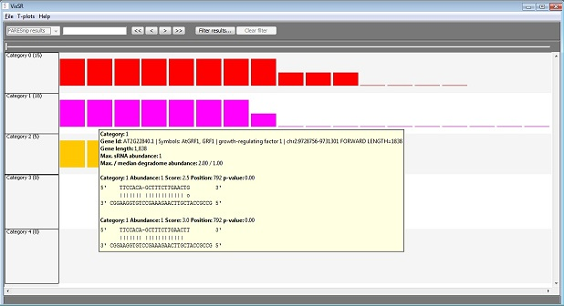
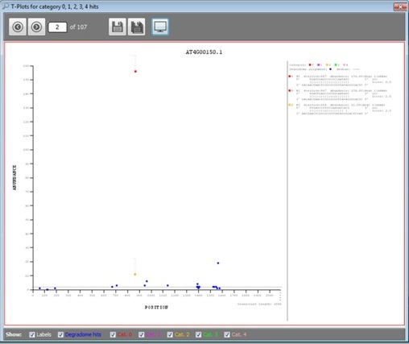

View T-plots
Once an analysis is complete, the sRNA/target interactions may be viewed in VisSR. Clicking the 'View T-plots in VisSR' menu item displays two screens. One is the main VisSR screen which shows all of the interactions found during the analysis. All of the interactions are displayed in tiers where each tier corresponds to a category (0 is the most significant and 4 the least).VisSR showing category 0, 1 and 3 interactions.

Each coloured rectangle represents an interaction. The colour corresponds to a category, e.g. red is used for category 0. The rectangle's height is a function of abundance, with taller rectangles having a higher abundance. When the mouse pointer hovers over an interaction a tooltip is displayed which provides additional information.
The other window which is opened is the T-plot window (which can also be opened from the 'View' menu in VisSR).:

The check-boxes at the bottom can be used to show/hide features of the plot. The text on the right-hand side describes each category 0 to 4 hit displayed in the T-plot. The buttons at the top can be used to navigate through the T-plots, to save one or all to a PDF document and also to capture an image of the current plot and save it to a file.